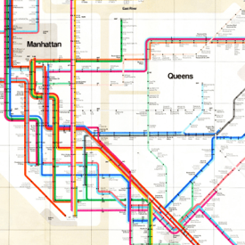
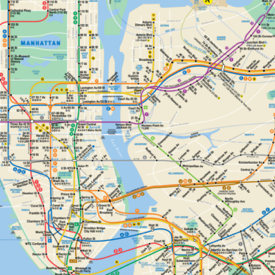
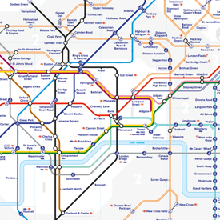

Massimo Vignelli is known as arguably one of the world’s most important leading characters in the history of modern design, with his work expanding across the design disciplines from graphic design, architecture and interior design, to the design of the New York City subway map. He transformed our world with his use of functional design building corporate identities for some of the world’s largest companies, such as Bloomingdale’s or American Airlines.
Born in Milan in 1931, Vignelli worked in many companies throughout his lifetime, including teaching at The New Bauhaus in Chicago in 1957, creating the Unimark design company with partners in 1964 and starting the Vignelli centre in 2008. Unfortunately, he passed away in New York in 2014 aged 83.
This essay will focus on research that will show why he is one of the most important icons within modern design. It will briefly look at Vignelli’s style and examples of his work until it focuses on arguably his main success within his career, the New York City subway map and other pieces paired with this, such as the signage also created and also comparing it to the new map created. My essay will aim show how his career progressed, what methods he used and why Vignelli was so successful.
INFO ON STYLE 250 WORDS.
“BLOCKQUOTE”
—citation
EXAMPLES OF HIS WORK WITH ANANLYSIS 250 WORDS
How many artists in the world can say that their work impacts over one million people a day? Very few, and due to the design of the signage and map in the New York Subway Vignelli is one of these people. Vignelli’s work with the subway map is probably the most iconic and one of the highlights of his career.
The map and signage was designed to help people navigate around four of the five boroughs within New York, prior to Vignelli’s designs I would describe the subway as chaotic and unorganised with various styles of signage making it almost impossible to navigate throughout the system which lacked any logic or pattern. The design that Vignelli came up with was revolutionary as it transformed the traditional geographical accurate map to simplified diagram form only using horizontal, vertical and 45° lines while distorting the shape of New York and the length of the subway lines to aid the clarity of the map. Vignelli termed it as
“the most beautiful spaghetti work ever done. It’s terrific. And it’s so clear, it’s unbelievable.”
This revamp gave the subway a new sense of modernity. Throughout the map and signage, he used Helvetica and their type standards as it is easy to read and its simple form paired well with the diagrammatic style. When it was first created in 1972 the map was initially harshly criticized and not used due to how different it was to the previous style and how it varied to the geographical layout of the city. In 1979, the map was replaced by a more geographically accurate map but still to this day Vignelli’s signage remains.
Various things have been changed since the design system was implemented in 2008 such as the map, it has been made a lot more complex and has changed from the simplistic line and dot system that Vignelli implemented.
“It’s very simple. Every subway line on the map has a color, and in reality they already have one. And every station has a dot, you know. Every stop is a dot—no dot, no stop. It couldn’t be easier than that.”
Vignelli himself said this about the map today “Instead, if you look at today’s map, it’s a total disaster, with fragmentation all over the place. I can show it to you. And this is what we tried to avoid.” I tend to agree with him on this matter, when we compare the two maps personally I find Vignelli’s easier to follow and understand and when comparing this to the new map it is a lot harder to follow your line and find the stop you need. He has been known to also compare his map to the London underground map, stating that their map was more successful as it was so simple with no indication of the geography within the city which Vignelli had subtly tried to do, his map had indications of water and buildings using tones of beige and grey.
  conclusion 250 WORDS
Digital:
Printed: